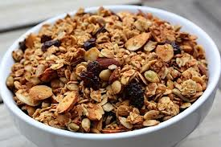

Granola
(Makes 9 cups)
Ingredients - Preparation - Nutrition Facts
Be sure to use old-fashioned rolled oats, not the quick-cooking variety. Raw pumpkins seeds are often sold as raw Mexican pepitas in supermarkets. Malt syrup is available at health food stores. In place of or in addition to apricots, figs and raisins, use 2 cups any dried fruit you want.
Ingredients:
- 4 cups old-fashioned rolled oats
- 3/4 cup raw pumpkin seeds
- 3/4 cup unsalted raw sunflower seeds
- 1 cup coarsely chopped unblanched almonds
- 1/2 cup wheat germ
- 1/2 cup powdered nonfat dry milk
- 1 tablespoon cinnamon
- 2 teaspoons nutmeg
- 1/4 teaspoon cloves
- 2 teaspoons vanilla extract
- 3/4 cup safflower oil
- 1/2 cup maple syrup
- 1/2 cup honey or malt syrup
- 1/2 cup dried apricots, finely chopped
- 1/2 cup dried figs, finely chopped
- 1/2 cup golden raisins
- 1/2 cup raisins

Preparation(top):
Stir together oats, pumpkin seeds, sunflower seeds, almonds, wheat germ, dry milk, cinnamon, nutmeg, cloves and vanilla. Set aside.
Combine oil, maple syrup and honey in small saucepan and cook, stirring, over medium heat until it starts to bubble, 3 to 5 minutes. Pour over oat mixture and toss with hands or wooden spoon until ingredients are moistened.
Spread mixture on baking sheet and bake at 350 degrees 30 minutes, stirring once. Edges tend to brown first, so stir carefully. When lightly browned, remove from oven and cool to room temperature.
Loosen from pan in chunks and add apricots, figs, golden raisins and raisins. Store in plastic freezer bags or airtight tin.
Nutrition Facts(top):
Each 1/4-cup serving: 191 calories; 10 mg sodium; 20 mg cholesterol; 10 grams fat; 23 grams carbohydrates; 5 grams protein; 0.78 gram fiber.